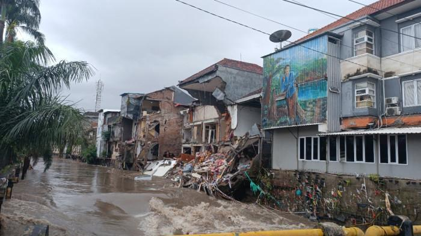

Waspada Banjir
Korban meninggal dunia akibat banjir di sejumlah daerah di Bali, bertambah dari 14 orang menjadi 16 orang, kata Badan Nasional Penanggulangan Bencana (BNPB).
Adapun satu orang dilaporkan masih dinyatakan hilang sampai Jumat (12/09) siang.
Di Kota Denpasar dilaporkan 10 orang meninggal dunia, dua orang di Kabupaten Jembrana, dan tiga orang di Kabupaten Gianyar, serta satu orang di Kabupaten Badung, kata BNPB.
Dan, "satu masih dilaporkan hilang," kata Kepala Pusat Data, Informasi dan Komunikasi Kebencanaan BNPB Abdul Muhari di Jakarta, Kamis (11/09) malam, seperti dilaporkan Antara.
Dengan demikian, menurut BNPB, jumlah korban meninggal dunia bertambah dari 14 orang menjadi 16 orang.
Dengan demikian, menurut BNPB, jumlah korban meninggal dunia bertambah dari 14 orang menjadi 16 orang.
Dua korban meninggal dunia tambahan itu adalah Maimunah (75 tahun) dan seorang lagi yang belum diketahui identitasnya.
"Malam hari ini pukul 21.33 Wita, jenazah Ibu Hajah Maimunah ditemukan," kata Danrem 163/Wira Satya, Brigjen TNI Ida I Dewa Agung Hadi Saputra, usai mengevakuasi korban di Jalan Sulawesi, Denpasar.
Banjir terparah dalam satu dekade terakhir
Banjir yang melanda sejumlah daerah di Provinsi Bali, Rabu (10/09),
merupakan yang terparah dalam satu dekade terakhir, kata Kepala Pelaksana Badan Penanggulangan Bencana Daerah (BPBD) Bali, I Gede Agung Teja Bhusana Yadnya.
Banjir tersebut menyebabkan sejumlah orang meninggal dunia.
Pada Kamis (11/09) pukul 11.00 WIB, total korban meninggal dunia yang sudah ditemukan berjumlah 14 jiwa dan yang masih dalam pencarian sebanyak dua warga.
Rincian korban meninggal di Kota Denpasar delapan jiwa, Kabupaten Jembrana dua jiwa, Kabupaten Gianyar tiga jiwa dan Kabupaten Badung satu jiwa
Korban yang hilang sebanyak dua jiwa teridentifikasi di Kota Denpasar.